에스텍 근태관리시스템 사용자 매뉴얼
Attendance Management Software v2.20.0 · 근태 담당자용
그림을 보면서 순서대로 따라 하는 쉬운 매뉴얼 — 근무조 편성 · 근태 변경 집중 안내
에스텍베스트 동부지사 · 2026년 11월
웹 주소 https://sadness500-boop.github.io/Attendance-Management-Software/
Produced by Rat Rae Choi
이 매뉴얼 보는 법
이 매뉴얼은 매달 근태를 입력하는 근태 담당자를 위한 안내서입니다. 그림 속 빨간 번호는 그림 아래 설명 번호와 같습니다.
장 | 이럴 때 보세요 |
|---|---|
1. 시작하기 | 처음 접속·설치, 휴대폰 앱, 로그인, 관리 범위·공유 근태, 백업에서 되살리기 |
2. 화면 둘러보기 | 메뉴와 사업장 근태표 읽는 법 |
3. 근무조 편성 ★ | 인원 추가, 근무조 코드·조(순번), 출퇴근·휴게, 순서 바꾸기, 특수 패턴, 일용직, 엑셀로 한 번에 등록(새) |
4. 근태 변경 ★ | 연차·반차·특근·연근·결근·연장·야간·직접 가감 등 실제 예시 11가지 |
5. 결과 확인과 엑셀 | 시간가감 읽기, 엑셀 출력, 추가근무 및 기타 청구 내역, 개인별·월 집계 |
6. 급여 ★ | 급여 설정(근로계약서), 근태 환산 반영, 4대보험·소득세, 급여명세서 인쇄·엑셀, 급여 확정 |
7. 휴대폰에서 쓰기 | 폴더블·휴대폰 화면 |
8. 자주 묻는 질문 | 막힐 때 |
💡 알아두기 한 달 근태는 ① 근무조 코드로 계획이 자동 생성 → ② 바뀐 날만 「변경」 입력 → ③ 시간가감 확인 → ④ 엑셀 출력 순서로 끝납니다. 관리자(제작자) 업무 — 서버·사용자 승인·조직·근무조 코드 만들기 — 는 별도 「제작자 관리 매뉴얼」을 보세요. |
목차
1. 시작하기
· 1-1. 프로그램 열기
· 1-2. 다운로드 QR로 휴대폰에서 열기 · 앱 설치
· 1-3. 친구 추천(주소 공유)
· 1-4. 로그인(제작자가 로그인을 켠 경우)
· 1-5. 관리 범위와 공유 근태
· 1-6. 근태가 사라졌을 때 — 백업에서 되살리기
2. 화면 둘러보기
· 2-1. 메뉴
· 2-2. 사업장 근태 화면
· 2-3. 근태표 한 사람 읽는 법
· 2-4. 근무 편성 인원
3. 근무조 편성 (인원 배치)
· 3-1. 근무조 코드와 조(순번) 이해하기
· 3-2. 인원 추가하기 (단계별)
· 3-3. 근무 설정 — 근무조·출퇴근·휴게·근로형태 바꾸기
· 3-4. 인원 순서 바꾸기
· 3-5. 감원(퇴사·전출)
· 3-6. 특수 근무패턴(조정)
· 3-7. 일용직(근무조 없음)
· 3-8. 엑셀로 한 번에 등록 — 「엑셀 자료 반영하기」 (v2.20.0 새 기능)
4. 근태 변경 (실제 예시)
· 4-1. 입력 창 여는 법
· 4-2. 근태기호별 계산
· 예시 1 · 연차 (11/2 월)
· 예시 2 · 반차 (11/3 화)
· 예시 3 · 휴무날 특근 D → A (11/7 토)
· 예시 4 · 연근 A → K (11/4 수)
· 예시 5 · 결근 (11/5 목)
· 예시 6 · 연장 2시간 (11/6 금)
· 예시 7 · 주간 → 야간 근무 변경 (11/9 월)
· 예시 8 · 시간가감 직접 입력 (11/10 화, 반차 −4.5h)
· 예시 9 · 메모만 남기기 (11/11 수)
· 예시 10 · 경조휴가 (11/12 목)
· 예시 11 · 조퇴 1시간 (11/13 금)
· 4-3. 한 달 입력 결과 보기
· 4-4. 변경 지우기 · 이 달 초기화
5. 결과 확인과 엑셀
· 5-1. 엑셀로 출력
· 5-2. 조직 통합 엑셀
· 5-3. 추가근무 및 기타 청구 내역
· 5-3-1. 기타 청구 (식대 · 장비 · 기타)
· 5-4. 개인별 · 월 집계
6. 급여
· 6-1. 급여 화면
· 6-2. 급여 설정 (근로계약서 입력)
· 6-3. 근태가 급여에 반영되는 방식
· 6-4. 4대보험 · 소득세
· 6-5. 급여명세서 · 이 달 추가 지급/공제 · 확정
· 6-6. 급여 현황 엑셀 · 전체 인쇄 · 일괄 확정
7. 휴대폰에서 쓰기
· 7-1. 휴대폰·폴더블 화면
8. 자주 묻는 질문
· 8-1. 막힐 때
· 8-2. 꼭 지킬 것
1. 시작하기
1-1. 프로그램 열기
PC·휴대폰 인터넷 주소창에 아래 주소를 입력합니다. 즐겨찾기(북마크)해 두면 편합니다.
예시 https://sadness500-boop.github.io/Attendance-Management-Software/ |
그림 1. 메인 화면
- 처음 열면 「근태 담당」을 지정합니다(상단 「근태 담당」 카드 → 이름·직책 입력).
- 자료는 그 기기(브라우저·앱)에 저장됩니다. 로그인을 쓰면 서버에도 저장되어 다른 기기에서도 똑같이 보입니다.
1-2. 다운로드 QR로 휴대폰에서 열기 · 앱 설치
1단계 상단의 「다운로드 QR」 카드를 누릅니다.
2단계 「웹 버전」 QR을 휴대폰 카메라로 찍으면 프로그램이 바로 열립니다.
그림 2. 다운로드 QR
3단계 안드로이드 앱이 필요하면 「안드로이드 앱 (APK)」 탭의 QR을 찍어 설치합니다.
- 설치 중 「출처를 알 수 없는 앱」 경고가 나오면 「설정 → 이 출처 허용」 후 설치합니다.
- 새 버전도 지우지 말고 덮어 설치하면 자료가 그대로 남습니다.
💡 알아두기 v2.14.2부터 QR·친구 추천 주소가 새 주소(…/Attendance-Management-Software/)로 바뀌었습니다. 예전에 인쇄·공유한 QR이 열리지 않으면 이 화면의 새 QR을 다시 공유하세요. |
1-3. 친구 추천(주소 공유)
그림 3. 친구 추천 — 주소·메시지 복사
- 「주소 복사」 또는 「메시지 복사」를 눌러 카카오톡·문자에 붙여 넣습니다.
- 받는 사람은 링크만 누르면 바로 열립니다.
1-4. 로그인(제작자가 로그인을 켠 경우)
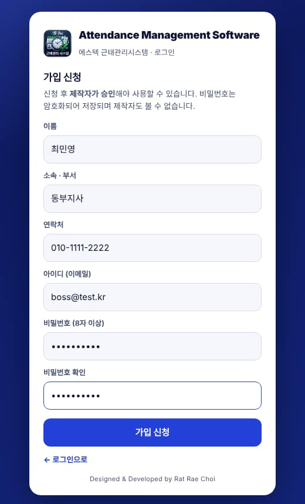 처음이세요? → 가입 신청 | 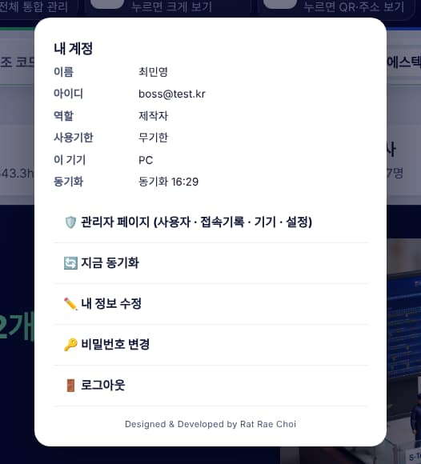 내 계정 메뉴 |
1단계 로그인 화면 아래 「처음이세요? 가입 신청」 → 이름·소속·연락처·이메일·비밀번호 입력.
2단계 「승인 대기 중」이 나오면 제작자에게 승인을 부탁하고, 승인 후 「다시 확인」.
3단계 로그인할 때 이 기기 이름(예: 회사 PC, 내 휴대폰)을 적습니다.
4단계 공용 PC는 다 쓴 뒤 상단 내 계정 → 로그아웃.
💡 알아두기 로그인 화면이 안 나오면 로그인 기능이 꺼진 상태입니다. 그대로 쓰면 됩니다. |
1-5. 관리 범위와 공유 근태
제작자가 승인할 때 관리 범위(전체 · 회사·지사 단위 · 사업장 단위)를 정해 줍니다. 범위를 받으면 제작자 자료를 공유 근태로 함께 쓰고, 같은 범위의 사람끼리 고친 근태가 약 20초 안에 서로의 화면에 반영됩니다.
보고 고치기 권한 — 「공유 근태」 | 보기만 권한 — 「👁 보기 전용」 |
권한 | 할 수 있는 일 |
|---|---|
✏️ 보고 고치기 | 내 범위 사업장의 근태를 보고 고침. 고친 내용은 같은 범위 사용자에게 바로 반영 |
👁 보기만 | 내 범위 사업장의 근태를 볼 수만 있음. 근태 칸을 눌러도 입력 창이 열리지 않음 |
조직별 권한 | 조직마다 다름 — 예) 동부지사 ✏️ 수정, 서부·남부·중부지사 👁 보기만. 보기만인 사업장을 누르면 「○○은(는) 보기만 할 수 있습니다」 안내 |
개인 자료 | 공유 안 함 — 내 기기·내 계정 자료만 사용(예전 방식) |
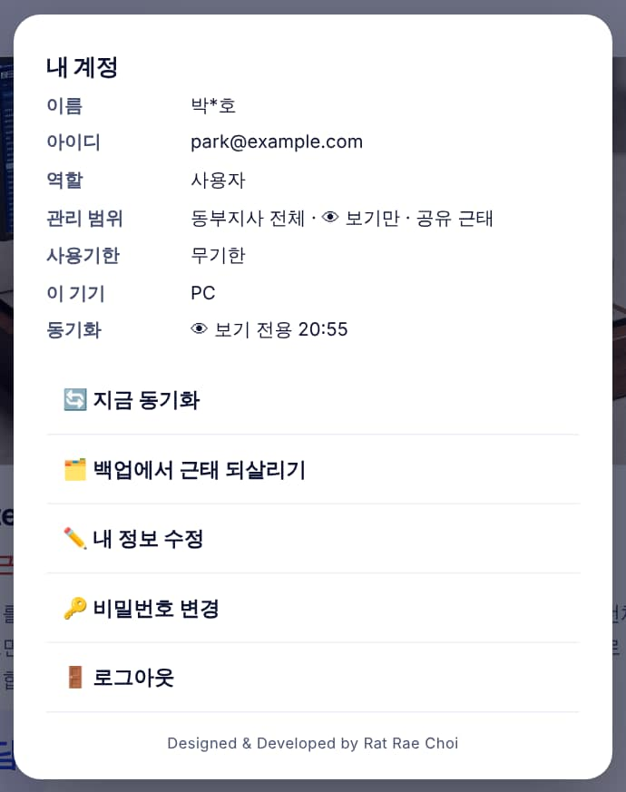 보기만 권한 | 조직별 권한 — 동부 수정 · 서부·남부·중부 보기 |
- 내 범위는 상단 내 계정 카드를 눌러 「관리 범위」 줄에서 확인합니다.
- 조직·근무조 코드·공휴일 같은 공통 설정은 「전체」 권한만 저장됩니다. 다른 권한으로 고치면 저장되지 않고 되돌아갑니다.
- 두 사람이 같은 사업장을 동시에 고치면 사람·날짜 단위로 합쳐서 저장합니다.
⚠ 주의 한 기기(PC·휴대폰)를 여러 계정이 번갈아 쓰지 마세요. 다른 계정으로 로그인하면 그 기기의 이전 자료는 화면에서 지워집니다(서버와 백업에는 남아 있음). |
1-6. 근태가 사라졌을 때 — 백업에서 되살리기
프로그램은 이 기기 자료를 덮어쓰기 전에 서버에 자동으로 백업합니다. 근태가 갑자기 비거나 다른 자료로 바뀌었으면 백업으로 되살립니다.
1단계 상단 내 계정 카드 → 「🗂️ 백업에서 근태 되살리기」.
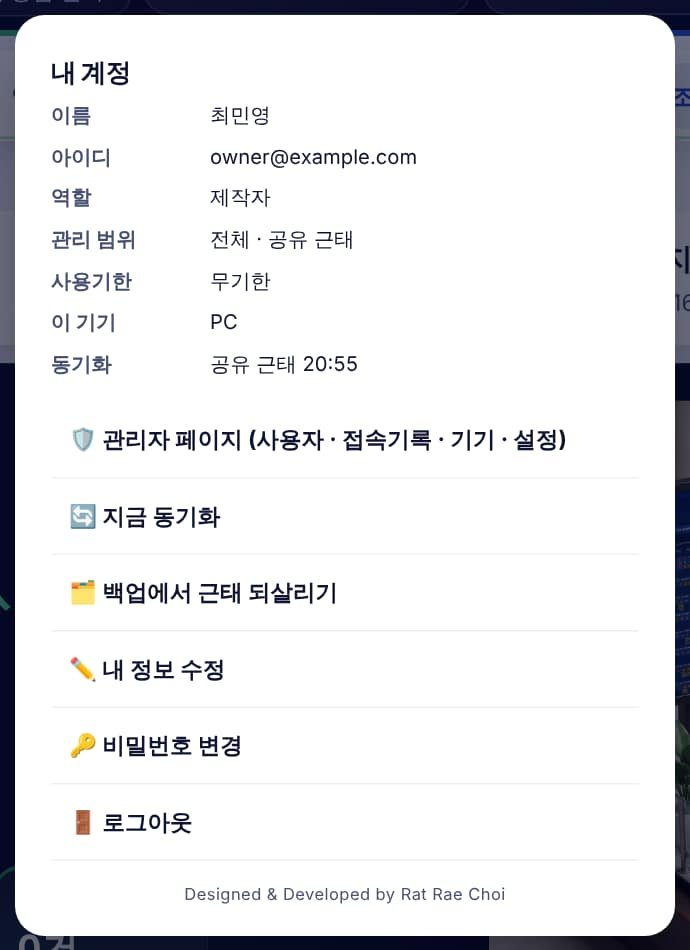
그림 4. 내 계정 메뉴
2단계 목록에서 날짜·인원·변경근태 수를 보고 되살릴 백업을 누릅니다.
- ☁️ 서버에 저장된 내 자료 — 내 계정 서버 사본
- 🗂️ 자동 백업 — 덮어쓰기 직전에 저장된 자료(최근 2개)
- 💻 이 기기 백업 — 인터넷이 안 될 때 기기에 남긴 자료
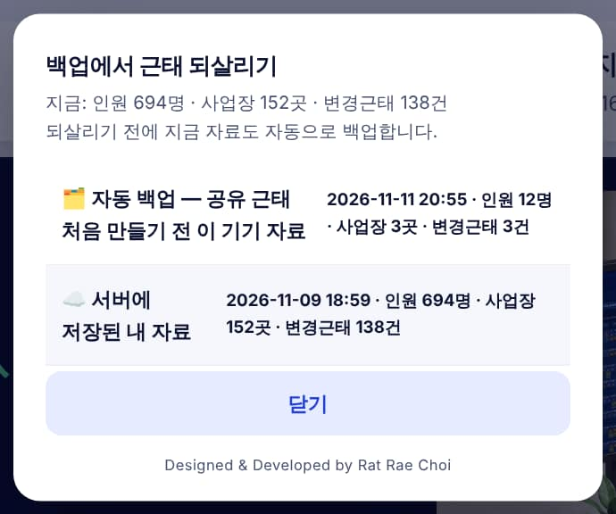
그림 5. 백업 목록
3단계 「되살리기」를 누르면 지금 자료를 한 번 더 백업한 뒤 바꾸고, 화면이 다시 열립니다.
그림 6. 되살리기 확인
💡 알아두기 공유 근태를 쓰는 사람은 내 관리 범위의 사업장만 백업 내용으로 바뀝니다. 보기만 권한은 되살릴 수 없습니다. 제작자에게 요청하세요. |
2. 화면 둘러보기
2-1. 메뉴
그림 7. 상단 메뉴
① | 메인 — 지사·사업장 요약, 지도 |
② | 회사·조직 — 회사·지사·사업장 구조(보통 관리자가 설정) |
③ | 사업장 근태 — 매일 쓰는 근태 입력 화면 |
④ | 개인별 — 한 사람의 달력 |
⑤ | 근무조 코드 — 근무 패턴 목록 |
⑥ | 인원 관리 — 전체 인원 표 |
⑦ | 월 집계 — 사업장별 합계 |
⑧ | 설정 — 공휴일·근태기호·백업 |
⑨ | 연·월 선택 — ‹ › 로 이전·다음 달 |
2-2. 사업장 근태 화면
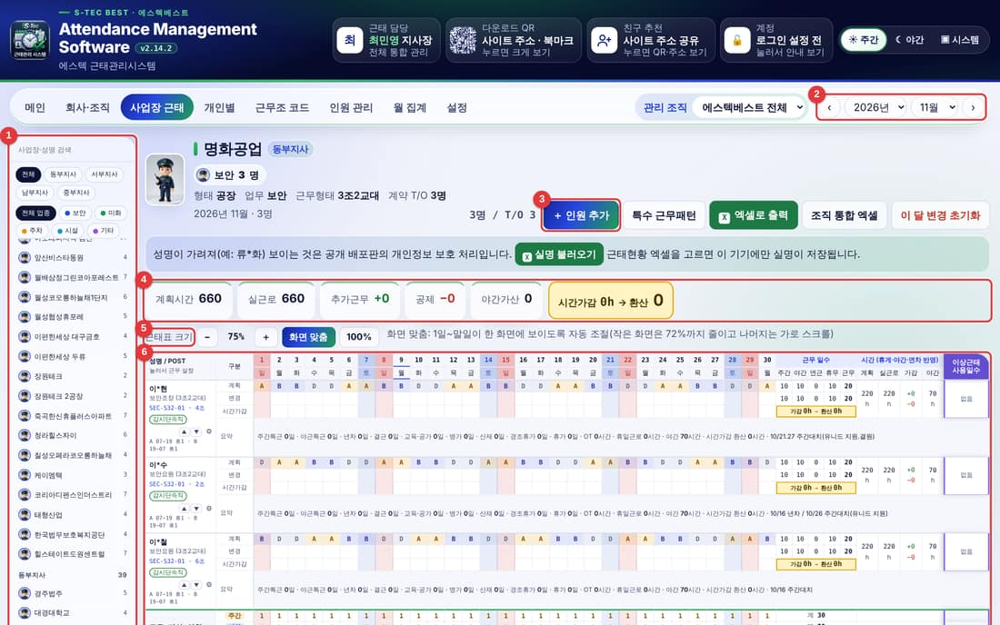
그림 8. 사업장 근태 — 전체 모습
① | 사업장 목록 — 누르면 그 사업장 근태표가 열립니다. 검색·지사·업종 필터 |
② | 연·월 선택 |
③ | 인원 추가 등 버튼 줄(특수 근무패턴·엑셀로 출력·조직 통합 엑셀·이 달 변경 초기화) |
④ | 합계 카드 — 계획·실근로·추가·공제·야간가산·시간가감→환산 |
⑤ | 근태표 크기 — 화면 맞춤/−/+/100% |
⑥ | 근태표 — 한 사람당 4줄 |
2-3. 근태표 한 사람 읽는 법
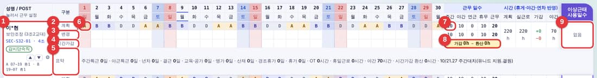
그림 9. 한 사람의 4줄과 오른쪽 집계
① | 성명 칸 — 누르면 「근무 설정」 창(근무조·출퇴근·휴게·근로형태·감원). ▲▼는 순서 이동 |
② | 계획 — 근무조 코드로 자동 생성(A 주간, B 야간, K 연근, D 휴무) |
③ | 변경 — 실제로 바뀐 날만 입력하는 줄 ★ |
④ | 시간가감 — 그날 늘거나 줄어든 시간(환산 기준) |
⑤ | 요약 — 특근·연차·결근 일수와 메모 |
⑥ | 날짜 칸(토 파랑, 일·공휴일 빨강) |
⑦ | 근무 일수·시간 — 위 줄은 계획, 아래 줄은 변경 반영 |
⑧ | 가감 → 환산 — 실제 늘어난 시간과 환산시간 |
⑨ | 이상근태 사용일수 — 연차·반차·결근 등 |
기호 | 뜻 | 설명 |
|---|---|---|
A | 주간 | 근무조의 주간 시간 |
B | 야간 | 근무조의 야간 시간(22~06시 야간가산) |
K | 연근 | 24시간 연속(주간+야간) |
D | 휴무 | 0시간 |
2-4. 근무 편성 인원
그림 10. 맨 아래 근무 편성 인원
- 날짜별로 주간·야간·연근·휴무 인원과 합계가 나옵니다. 변경 근태가 반영된 숫자입니다.
- 연차·결근 등은 휴무 인원에 포함됩니다. 인원이 비는 날을 한눈에 찾을 수 있습니다.
3. 근무조 편성 (인원 배치)
근무조 편성은 「누가 어떤 근무 패턴(근무조 코드)의 몇 번째 조로 일하는지」를 정하는 일입니다. 한 번 정하면 매달 계획 근태가 자동으로 만들어집니다.
3-1. 근무조 코드와 조(순번) 이해하기
근무조 코드는 근무 패턴의 이름표입니다. 예: SEC-S32-01 = 보안(SEC) 3조2교대(S32) 1번 코드.
코드 가운데 | 근무형태 | 예 |
|---|---|---|
W5 · W6 | 주간고정(주5일·주6일) | CLN-W5-01 미화 주5일제 |
BW | 격주근무 | SEC-BW-01 |
K24 | 격일제(24시간) | SEC-K24-01 |
S32 · S42 · S52 | 3조2교대 · 4조2교대 · 5조2교대 | SEC-S32-01 |
SVX | 변형교대 | SEC-SVX-01 |
DL | 일용직(근무조 없음) | CLN-DL-01 |
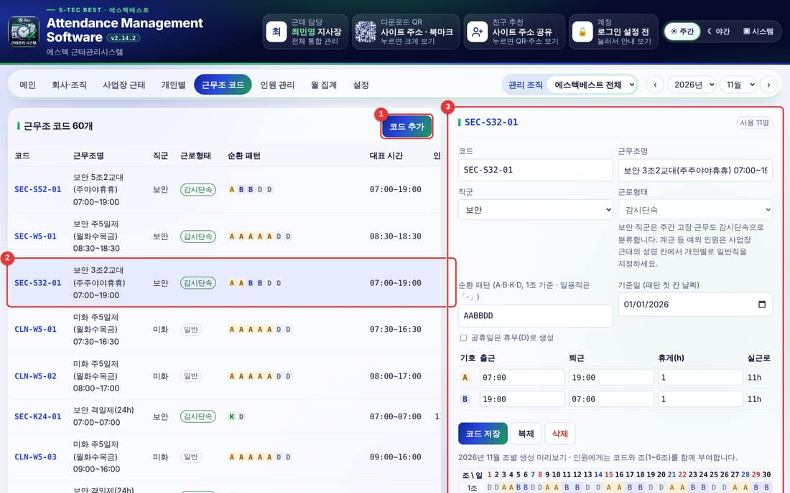
그림 11. 근무조 코드 화면
① | 새 코드 만들기(관리자) |
② | 코드 목록 — 누르면 오른쪽에 상세 |
③ | 선택한 코드의 상세·조별 미리보기 |
순환 패턴은 1조 기준으로 반복되는 근무 순서입니다. 3조2교대 「AABBDD」는 주간 2일 → 야간 2일 → 휴무 2일이 반복됩니다.
조(순번)는 같은 패턴을 며칠 늦게 시작하는 사람을 구분합니다. 같은 사업장에서 1조·2조·3조를 나눠 배치하면 매일 누군가는 주간, 누군가는 야간이 됩니다.
그림 12. 3조2교대(AABBDD) 조별 11월 근태 — 조마다 하루씩 밀려 시작
3-2. 인원 추가하기 (단계별)
1단계 사업장 목록에서 사업장을 고르고 「+ 인원 추가」를 누릅니다.
그림 13. 버튼 줄
① | 인원 추가 |
② | 특수 근무패턴 |
③ | 엑셀로 출력 |
④ | 조직 통합 엑셀 |
⑤ | 이 달 변경 초기화 |
2단계 입력 창을 채웁니다.
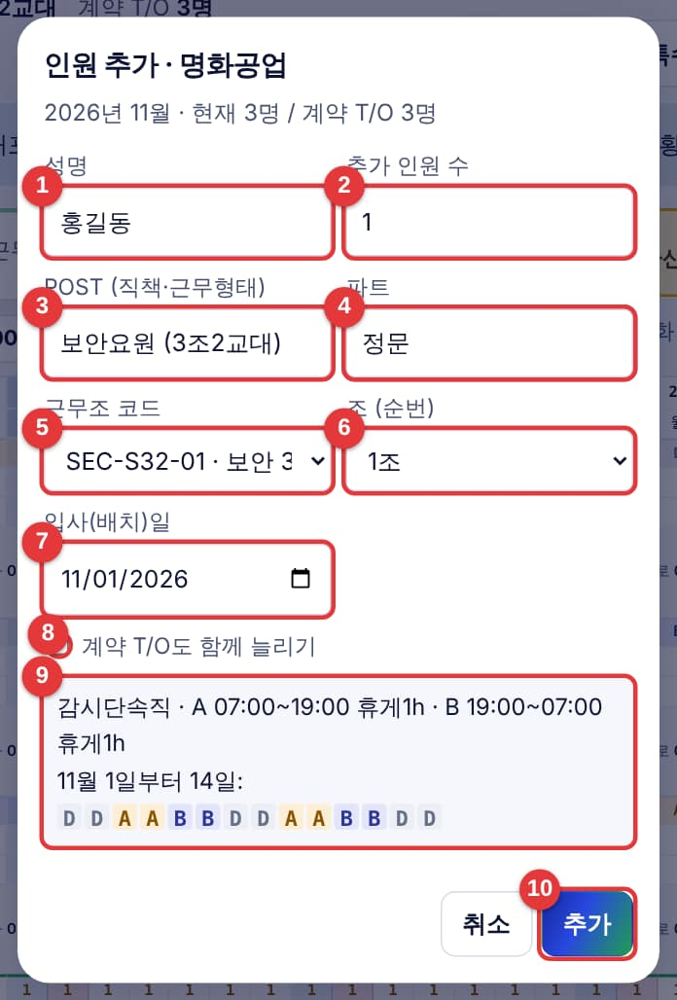
그림 14. 인원 추가 창
① | 성명 — 비우면 「인원 자리」로 추가(나중에 이름 입력) |
② | 추가 인원 수 — 같은 조건으로 여러 명 한 번에 |
③ | POST — 직책·근무형태(예: 보안요원 (3조2교대), 女미화원 (단기직/4h) (1강의동)) |
④ | 파트 — 근무 위치(예: 정문) |
⑤ | 근무조 코드 — 보안→미화→주차… 업종별, 근무형태 순서로 묶여 나옵니다 |
⑥ | 조(순번) — 아래 미리보기를 보며 고릅니다 |
⑦ | 입사(배치)일 — 이 날부터 근태 생성 |
⑧ | 계약 T/O도 함께 늘리기 |
⑨ | 미리보기 — 근로형태·시간·첫 14일 근태 |
⑩ | 추가 |
3단계 조(순번)를 바꾸면 미리보기의 14일 근태가 하루씩 밀립니다. 기존 인원과 겹치지 않게 고릅니다.
- 예: 1조 = D D A A B B …, 2조 = D A A B B D …
4단계 「추가」를 누르면 근태표 맨 아래에 새 인원이 생기고, 그 달 계획 근태가 자동으로 채워집니다.
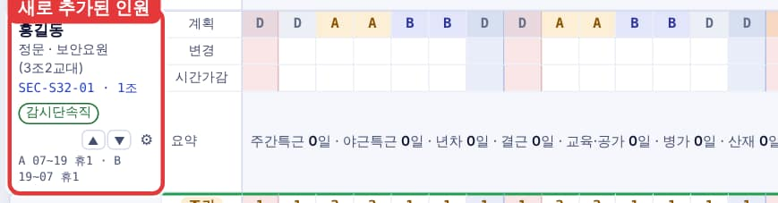
그림 15. 추가된 인원
1조 미리보기 | 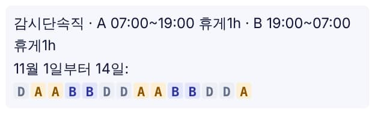 2조 미리보기 |
💡 알아두기 보안 근무조는 주간고정도 감시단속직으로 정해집니다(연장·휴일 ×1.0, 야간 +0.5만 적용). 예외 인원은 근무 설정에서 일반직으로 바꿉니다. 입사일이 달 중간이면 그 전날까지는 근태가 비어 있습니다. |
3-3. 근무 설정 — 근무조·출퇴근·휴게·근로형태 바꾸기
근태표의 성명 칸을 누르면 근무 설정 창이 열립니다. 이 창에서 고친 내용은 보고 있는 달부터 적용되고, 이전 달 근태는 그대로 남습니다.
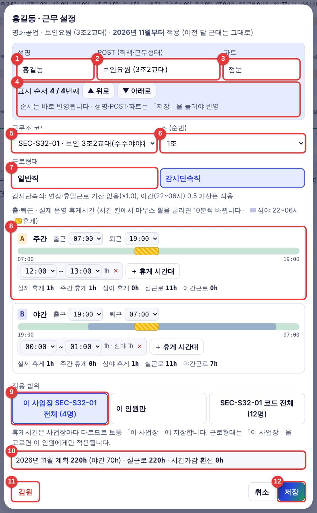
그림 16. 근무 설정 창
① | 성명 고치기 |
② | POST(직책·근무형태) 고치기 |
③ | 파트 고치기 |
④ | 표시 순서 ▲ 위로 · ▼ 아래로 — 바로 반영 |
⑤ | 근무조 코드 바꾸기(다른 근무 패턴으로 전환) |
⑥ | 조(순번) 바꾸기 |
⑦ | 근로형태 — 일반직 / 감시단속직 |
⑧ | 출·퇴근 · 휴게시간 — 주간(A)·야간(B) 각각 |
⑨ | 적용 범위 — 이 사업장 전체 / 이 인원만 / 코드 전체 |
⑩ | 이 달 계획·실근로·환산 미리 계산 |
⑪ | 감원 — 퇴사·전출 처리 |
⑫ | 저장 |
출·퇴근과 휴게시간 맞추기
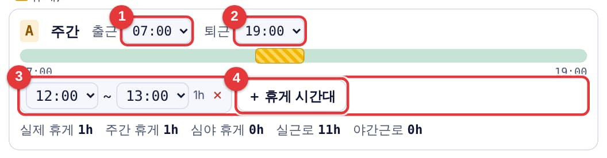
그림 17. 출·퇴근·휴게 편집
① | 출근 시각 |
② | 퇴근 시각(자정을 넘기면 다음 날 퇴근) |
③ | 휴게 시간대 — 막대의 노란 빗금이 휴게. 시간 칸에서 마우스 휠을 굴리면 10분씩 바뀜 |
④ | + 휴게 시간대 — 휴게를 여러 번으로 나눌 때 |
- 주간 휴게는 근로시간만 빠지고, 심야 휴게(22~06시)는 근로시간과 야간가산이 함께 빠집니다.
- 휴게시간은 사업장마다 다르므로 보통 「이 사업장」에 저장합니다.
- 한 사람만 다르면 「이 인원만」을 고릅니다. 나중에 「개인 설정 해제」로 되돌릴 수 있습니다.
예시 근무조를 바꿀 때: 11월부터 2조 → 3조로 바뀌는 인원은 11월 근태표에서 성명 칸 → 조(순번) 3조 → 저장. 10월 근태는 2조 그대로 남고 11월부터 3조 근태가 만들어집니다. |
3-4. 인원 순서 바꾸기
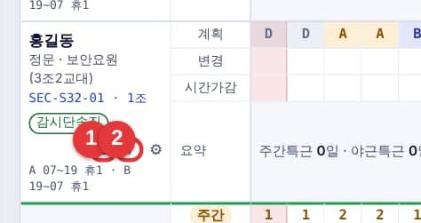
그림 18. 성명 칸의 ▲▼
① | ▲ 한 칸 위로 |
② | ▼ 한 칸 아래로 |
- 누르는 즉시 저장되고, 엑셀 출력 순서도 같이 바뀝니다.
- 근무 설정 창의 「▲ 위로 · ▼ 아래로」도 같습니다.
3-5. 감원(퇴사·전출)
1단계 성명 칸 → 근무 설정 창 왼쪽 아래 「감원」.
2단계 마지막 근무일을 정하고 확인합니다. 그다음 날부터 근태가 생성되지 않고, 이전 근태는 남습니다.
3-6. 특수 근무패턴(조정)
정해진 교대 패턴에 「월요일 첫 주간은 24시간」 같은 사업장 특수 규칙이 붙는 경우 규칙으로 등록하면 매달 「조정」 줄이 자동으로 생깁니다. 조정 근태는 정상 근무로 계산되어 시간가감이 생기지 않습니다.
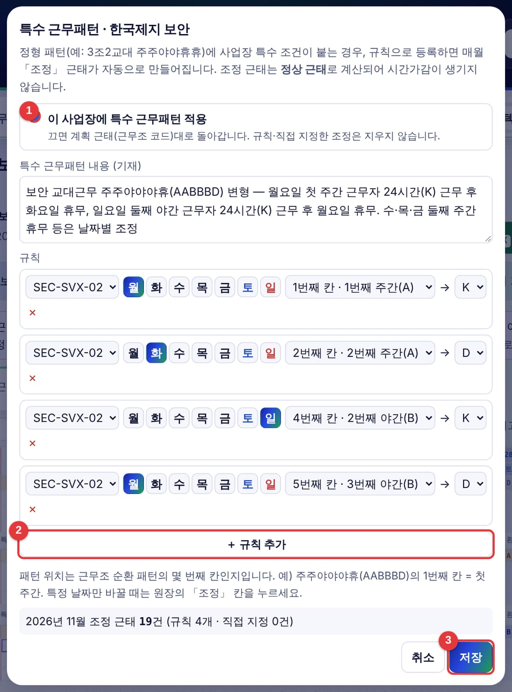
그림 19. 특수 근무패턴 창(한국제지 보안 예)
① | 이 사업장에 특수 근무패턴 적용 |
② | + 규칙 추가 — 근무조·요일·패턴 칸 → 바꿀 근태 |
③ | 저장 |
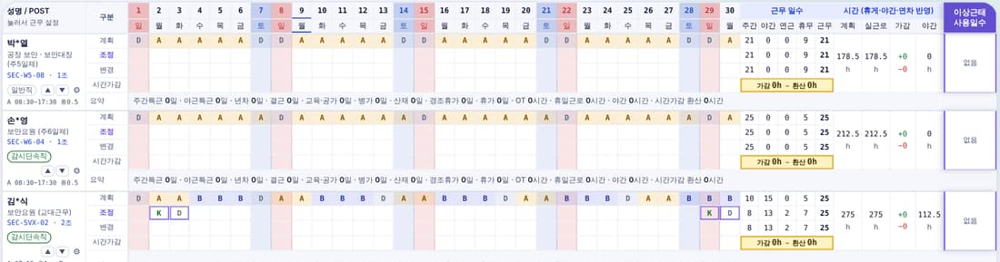
그림 20. 「조정」 줄이 추가된 근태표
3-7. 일용직(근무조 없음)
근무하는 날만 하루씩 근태를 넣는 일용직은 일용직 코드를 씁니다: SEC-DL-01(보안) · CLN-DL-01(미화) · ETC-DL-01(기타).
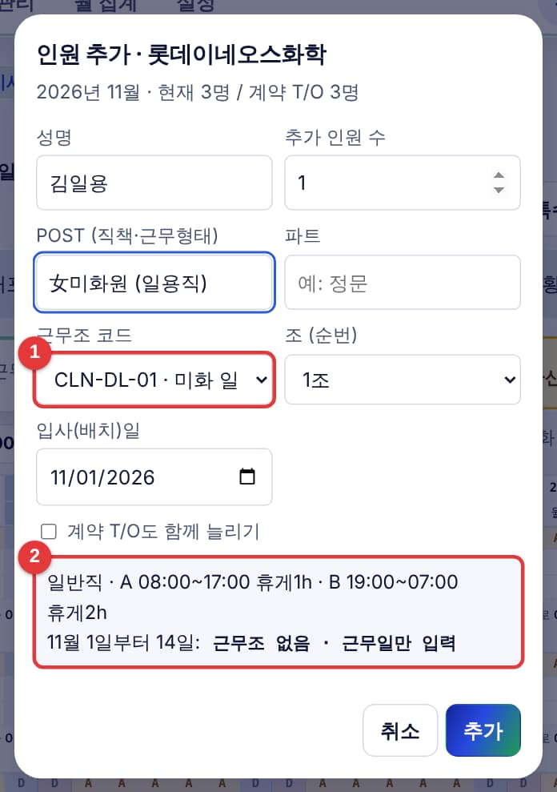
그림 21. 일용직 코드로 추가
① | 근무조 코드에서 「일용직(근무조 없음)」 선택 |
② | 미리보기에 「근무조 없음 · 근무일만 입력」 |
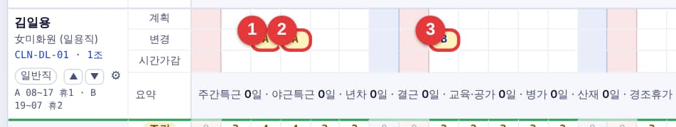
그림 22. 근무한 날만 변경 칸에 입력
① | 11/3 주간(A) |
② | 11/4 주간(A) |
③ | 11/9 야간(B) |
- 계획 줄은 비어 있습니다. 근무한 날 「변경」 칸에 A·B·K를 넣습니다.
- 근무한 날은 정상 근무로 계산(시간가감 없음). 「추가(+)」 시간만 연장 환산됩니다.
3-8. 엑셀로 한 번에 등록 — 「엑셀 자료 반영하기」 (v2.20.0 새 기능)
사업장 인원이 많거나 새 사업장을 열 때, 한 사람씩 추가하지 않고 엑셀 양식 한 장에 적어 한 번에 등록합니다. 인원 설정(근무조 코드·조·근로형태·출퇴근·휴게)과 급여(근로계약서) 까지 함께 들어갑니다.
그림 23. 회사·조직 화면 위쪽 — 「📥 엑셀 자료 반영하기」 (설정 › 조직 구조에도 같은 버튼)
1단계 회사·조직 메뉴 → 「📥 엑셀 자료 반영하기」 를 누릅니다.
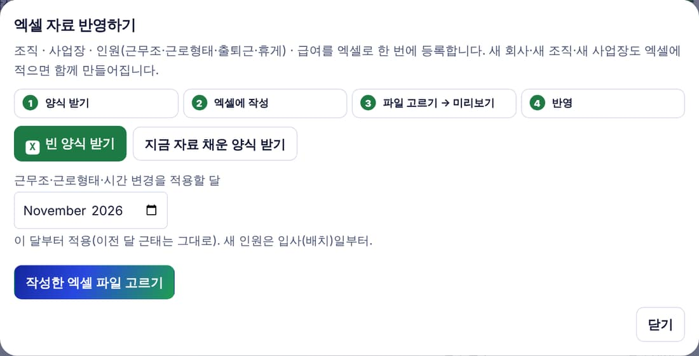
그림 24. 엑셀 자료 반영하기 창 — ① 양식 받기 ② 엑셀에 작성 ③ 파일 고르기 → 미리보기 ④ 반영
2단계 양식을 받습니다.
- 빈 양식 받기 — 처음 등록할 때.
- 지금 자료 채운 양식 받기 — 지금 관리 범위의 조직·사업장·인원·급여가 채워진 양식. 고칠 칸만 바꿔 다시 반영할 때 편합니다.
3단계 엑셀의 「인원·급여」 시트에 한 줄 = 한 사람으로 적습니다(아래 표 참고). 노란 칸(*)은 꼭 적습니다.
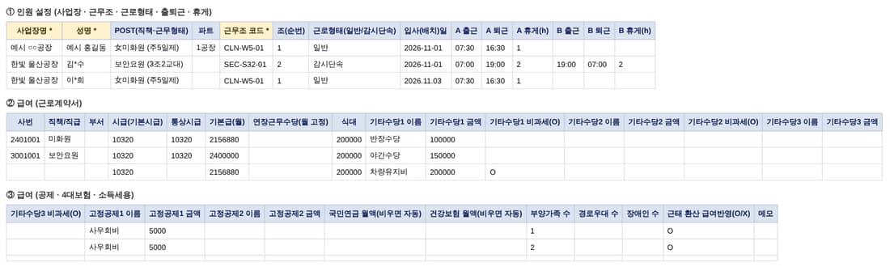
그림 25. 「인원·급여」 시트 — ① 인원 설정 ② 급여(근로계약서) ③ 공제·4대보험·소득세용 (예시 값)
4단계 창에서 적용할 달을 고르고 「작성한 엑셀 파일 고르기」. 반영하기 전에 미리보기가 나옵니다.
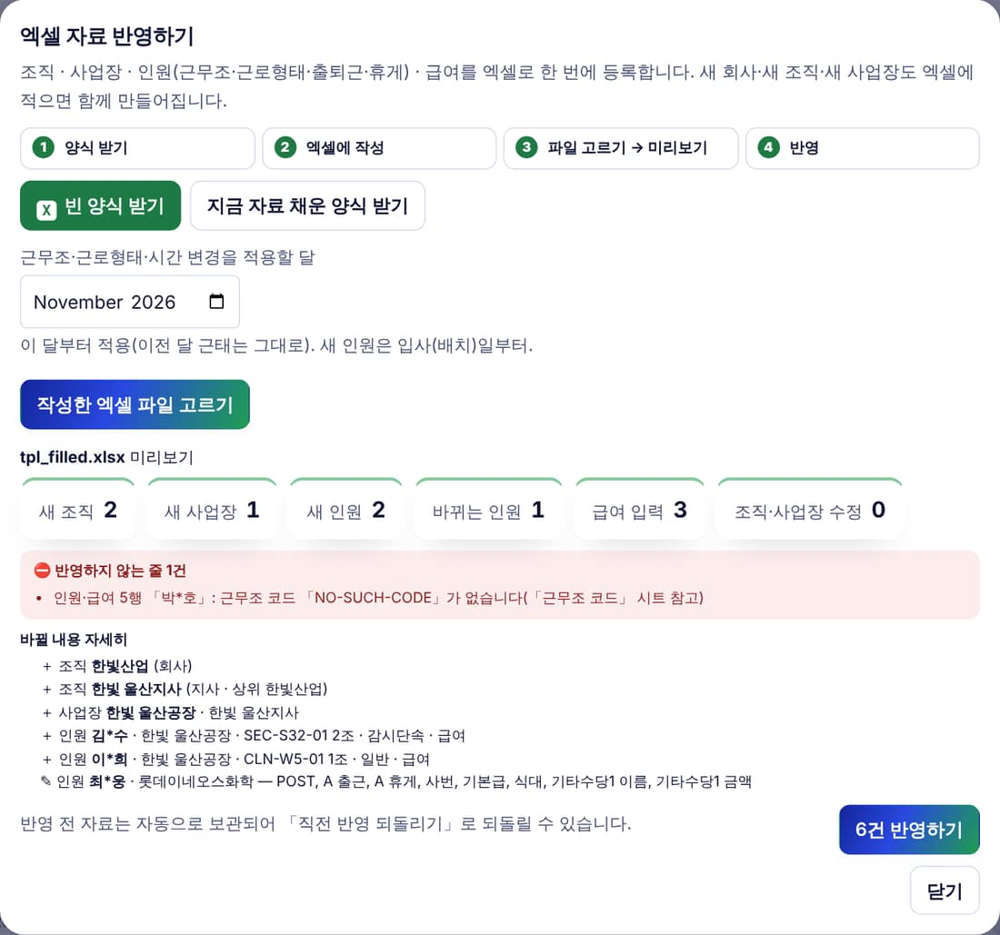
그림 26. 미리보기 — 새 인원·바뀌는 인원·급여 입력 건수, 반영하지 않는 줄(⛔), 확인할 줄(⚠)
5단계 숫자와 ⛔·⚠ 내용을 확인하고 반영을 누릅니다. 근태표·급여에 바로 들어갑니다.
「인원·급여」 시트 칸 설명
칸 | 적는 법 |
|---|---|
사업장명 * | 프로그램의 사업장 이름 그대로. 없는 이름이면 새 사업장으로 만들어집니다(⚠ 표시). |
성명 * / 사번 | 사업장명 + 사번(없으면 성명)으로 기존 인원을 찾아 바꾸고, 없으면 새로 추가합니다. |
근무조 코드 * · 조 | 「근무조 코드」 시트의 코드를 목록에서 고릅니다. 조(순번)는 1부터. 새 인원은 코드가 꼭 필요합니다. |
근로형태 | 일반 / 감시단속. 비우면 근무조 코드의 근로형태를 따릅니다. |
A 출근·퇴근·휴게 / B … | A = 주간, B = 야간. 예) 07:30 / 16:30 / 1. 비우면 사업장·근무조 시간표를 씁니다. |
입사(배치)일 | 2026-11-01 또는 2026.11.03. 새 인원은 이 날부터 근태가 생깁니다. |
급여 칸 | 시급·통상시급·기본급·연장근무수당(월 고정)·식대·기타수당 1~3(비과세면 O)·고정공제 1~2 — 6-2 급여 설정과 같은 항목 |
국민연금·건강보험 월액 | 비우면 자동 계산. 부양가족·경로우대·장애인 수는 소득세 계산용 |
근태 환산 급여반영 | O = 변경 근태 환산시간을 급여에 반영, X = 반영 안 함 |
💡 알아두기 빈 칸은 「바꾸지 않음」 입니다. 이미 있는 값을 지우려면 프로그램 화면에서 지우세요. 근무조·근로형태·출퇴근 변경은 고른 달부터 적용되고 이전 달 근태는 그대로입니다. 성명이 「예시」로 시작하는 줄은 건너뜁니다 — 예시 줄은 지우지 않아도 됩니다. |
⚠ 주의 잘못 반영했으면 창을 다시 열어 「직전 반영 되돌리기」 — 마지막 반영 바로 전 상태로 돌아갑니다(한 번만). ⛔ 줄(없는 근무조 코드, 빈 사업장명 등)은 반영되지 않습니다. 행 번호를 보고 엑셀을 고친 뒤 다시 고르세요. 급여는 민감한 개인정보입니다. 양식 파일 보관·전달에 주의하세요. 공유 근태를 쓰면 수정 권한이 있는 사업장만 서버에 저장됩니다. 보기만 권한인 사업장은 양식에 적지 마세요. |
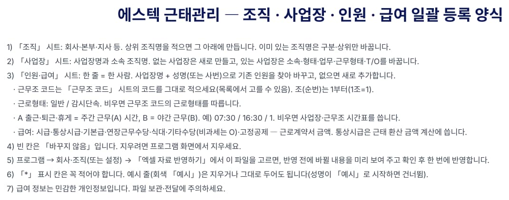
그림 27. 양식의 「안내」 시트 — 작성 규칙 요약
4. 근태 변경 (실제 예시)
계획과 다르게 근무한 날만 「변경」 줄에 입력합니다. 아래 예시는 미화 주5일제(평일 A 07:30~16:30, 휴게 1h, 일반직) 인원으로 실제 입력한 화면입니다.
4-1. 입력 창 여는 법
그림 28. 변경 줄의 날짜 칸을 누름
① | 바꿀 날짜의 변경 칸 |
그림 29. 변경 근태 입력 창
① | 이름·날짜·근무조·그날 계획 |
② | 근태기호 — A 주간·B 야간·K 연근·D 휴무, 연차·반차·공가·교육·경조휴가·휴가(유급), 병가·결근·산재(무급), 입사·퇴사 |
③ | 추가(+)·차감(−) 시간 — 실제 근무시간을 늘리고 줄임(배율 적용) |
④ | 그중 야간(22~06시) 시간 |
⑤ | 시간가감 직접 입력 — 숫자를 배율 없이 그대로 가감·환산에 더함 |
⑥ | 메모 |
⑦ | 계산란 — 저장 전에 결과 확인 |
⑧ | 저장 |
⑨ | 변경 삭제 — 그날 변경을 지움 |
💡 알아두기 계산란(⑦)을 보고 「가감」과 「시간가감 환산」이 맞는지 확인한 뒤 저장하세요. |
4-2. 근태기호별 계산
기호 | 이름 | 계산 |
|---|---|---|
A·B·K | 주간·야간·연근 | 그 근무 시간으로 계산. 계획보다 길면 연장, 휴무날이면 휴일근로 |
D | 휴무 | 0시간 → 계획 시간만큼 공제 |
연 | 연차 | 1일 8시간 인정(시간가감 0) |
반 | 반차 | 4시간 인정 + 나머지 근무 |
공·훈·경·휴 | 공가·교육·경조휴가·휴가 | 계획 시간 그대로 인정(시간가감 0) |
병·결·산 | 병가·결근·산재 | 무급 0시간 → 계획 시간 공제 |
입·퇴 | 입사·퇴사 | 표시만 |
구분 | 일반직 | 감시단속직 |
|---|---|---|
연장(계획보다 더 일함) | ×1.5 | ×1.0 |
휴일근로(휴무날 근무) | 8시간까지 ×1.5, 초과 ×2.0 | ×1.0 |
야간(22~06시) | +0.5 가산 | +0.5 가산 |
예시 1 · 연차 (11/2 월)
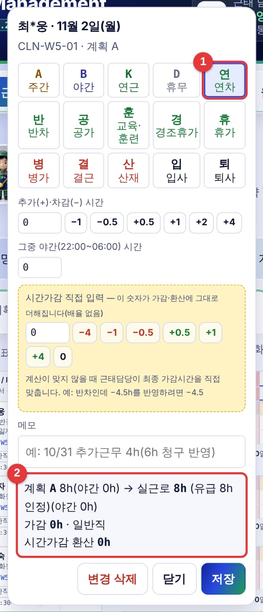 ① 연차 선택 → ② 계산 확인 | 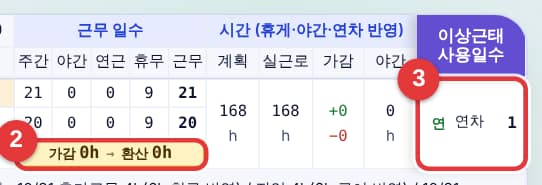 오른쪽 집계: ③ 연차 1 |
그림 30. 11/2 변경 칸에 「연」
- 계획 A 8h → 유급 8h 인정. 가감 0h, 환산 0h. 이상근태 사용일수에 「연차 1」.
예시 2 · 반차 (11/3 화)
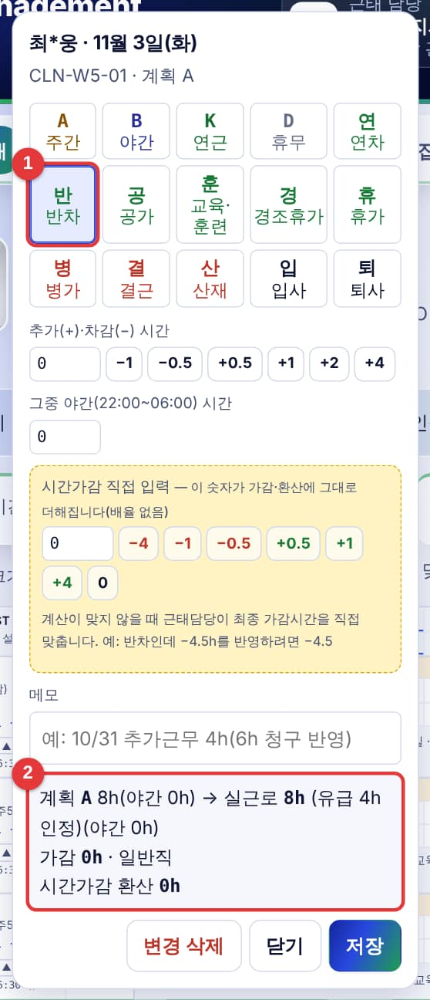 반차 선택 | 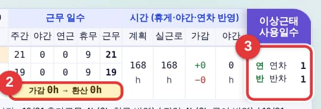 반차 1 추가 |
- 4시간 유급 인정 + 나머지 4시간 근무로 봅니다. 가감 0h. 연차는 0.5일 사용으로 셉니다(요약: 년차 1.5일).
예시 3 · 휴무날 특근 D → A (11/7 토)
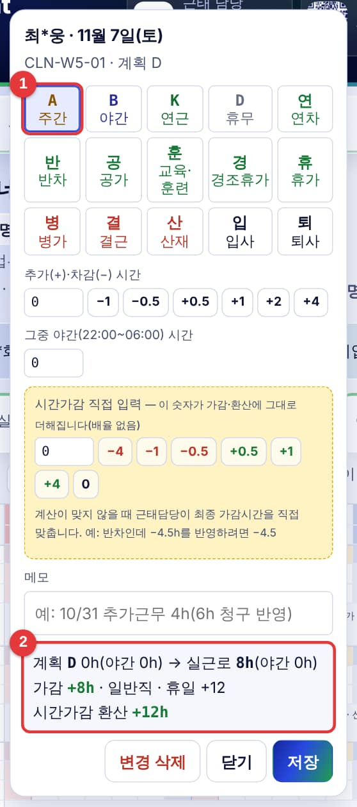 계획 D인 날에 A 선택 | ② 가감 +8h → 환산 +12h |
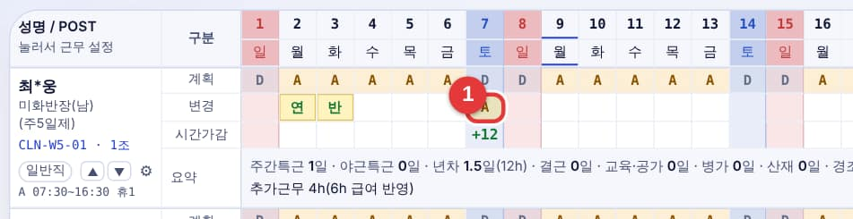
그림 31. 토요일 변경 칸에 A, 시간가감 +12
- 휴무(D)날 주간 8시간 근무 = 휴일근로. 일반직이라 8h × 1.5 = 환산 +12h.
- 감시단속직이었다면 ×1.0 → 환산 +8h.
예시 4 · 연근 A → K (11/4 수)
A인 날에 K 선택 | 환산 누적 |
- 순환 패턴에 K가 없는 근무조의 연근은 주간(A)+야간(B)으로 계산합니다.
- 이 예: 실근로 18h(야간 6.5h) → 가감 +10h, 연장 +15 + 야간가산 +3.25 = 환산 +18.25h.
예시 5 · 결근 (11/5 목)
결근 선택 | ③ 결근 1 |
- 무급 0시간 → 계획 8h 공제. 가감 −8h, 환산 −8h. 이상근태 사용일수에 「결근 1」.
예시 6 · 연장 2시간 (11/6 금)
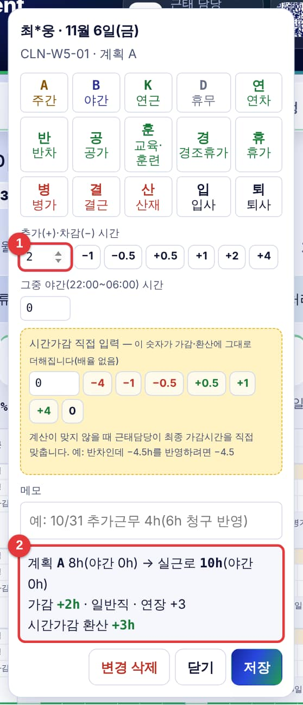 근태기호는 그대로, 추가 +2 | 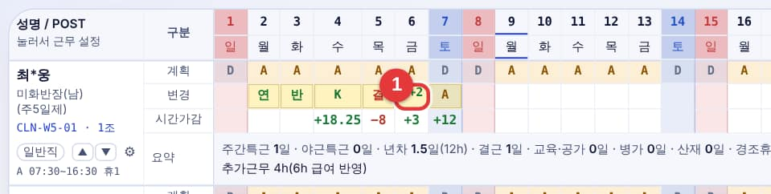 변경 칸에 「·+2」 |
- 같은 근무에서 시간만 늘었으면 근태기호는 고르지 않고 추가(+)에 2를 넣습니다(+2 버튼 또는 직접 입력).
- 일반직 연장 2h × 1.5 = 환산 +3h. 야간이 섞이면 「그중 야간」에 시간을 적습니다.
예시 7 · 주간 → 야간 근무 변경 (11/9 월)
A인 날에 B 선택 | 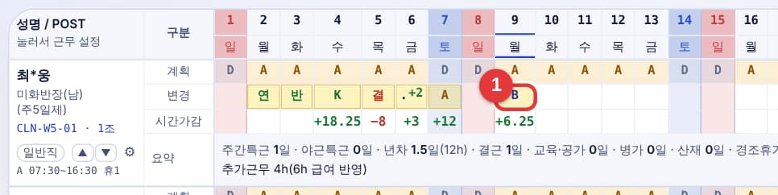 변경 칸에 B |
- 야간 근무로 바뀌면 시간 차이(연장)와 야간가산(22~06시 × 0.5)이 함께 붙습니다.
- 이 예: 가감 +2h, 연장 +3 + 야간가산 +3.25 = 환산 +6.25h.
예시 8 · 시간가감 직접 입력 (11/10 화, 반차 −4.5h)
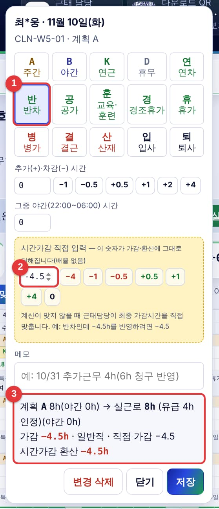 ① 반차 ② 직접 입력 −4.5 ③ 계산 | 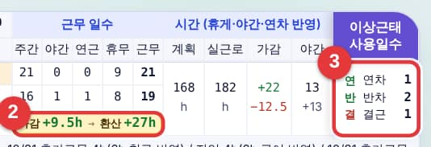 가감·환산에 그대로 반영 |
- 반차·공가처럼 유급 인정 근태는 실제 근무 0h라 「추가·차감」으로는 더 줄지 않습니다.
- 이럴 때 시간가감 직접 입력에 −4.5를 넣으면 배율 없이 가감 −4.5h, 환산 −4.5h가 됩니다. 근태표 변경 칸에 ⊖4.5 표시.
- 버튼: −4 · −1 · −0.5 · +0.5 · +1 · +4, 「0」은 지우기.
⚠ 주의 직접 입력은 최종 숫자를 근태담당이 직접 맞출 때만 씁니다. 일반 연장·차감은 「추가(+)·차감(−)」을 쓰세요(배율이 자동 적용됩니다). |
예시 9 · 메모만 남기기 (11/11 수)
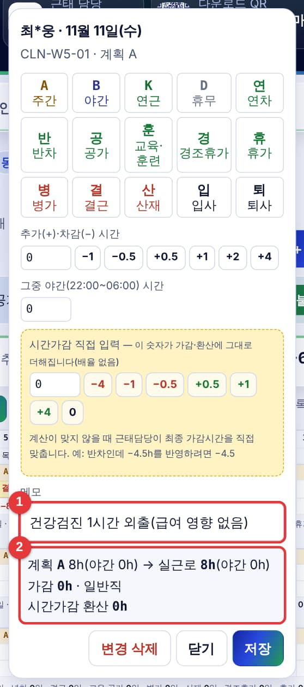
그림 32. 근태기호 없이 메모만
- 근태는 그대로 두고 메모만 적으면 변경 칸에 「메모」 표시가 생기고, 요약 줄·엑셀에 메모가 나옵니다.
예시 10 · 경조휴가 (11/12 목)
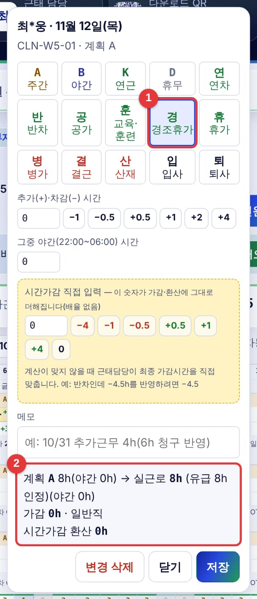 경조휴가 선택 | 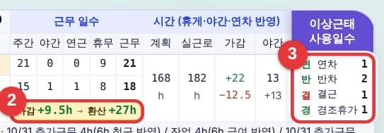 경조휴가 1 |
- 경조휴가·휴가는 계획 시간 그대로 인정(가감 0)하고 이상근태 사용일수에 셉니다.
예시 11 · 조퇴 1시간 (11/13 금)
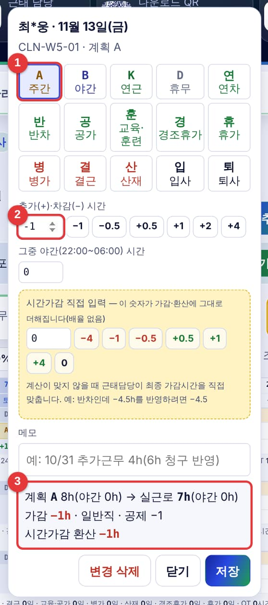 차감 −1 | 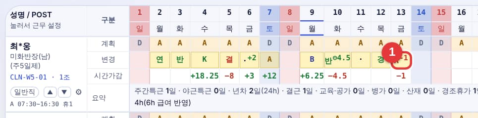 변경 칸 「A−1」 |
- 일찍 퇴근했으면 차감(−)에 1 → 실근로 7h, 가감 −1h, 환산 −1h(공제는 배율 없음).
4-3. 한 달 입력 결과 보기
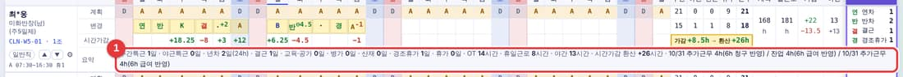
그림 33. 예시 11개를 넣은 뒤 — 변경·시간가감·요약·집계
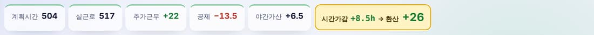
그림 34. 상단 합계 카드
- 요약 줄: 주간특근·연차·결근 일수, 시간가감 환산, 메모가 모입니다.
- 합계 카드 「시간가감 +○h → 환산 +○」: 사업장 전체 실제 가감시간과 환산시간.
4-4. 변경 지우기 · 이 달 초기화
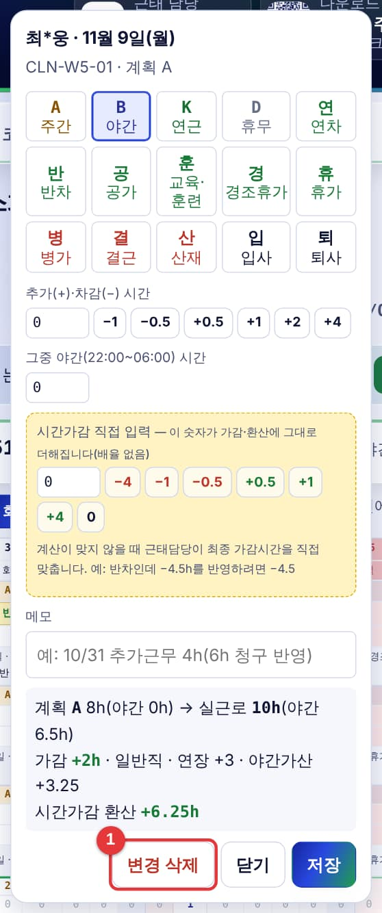 하루 지우기: 변경 삭제 | 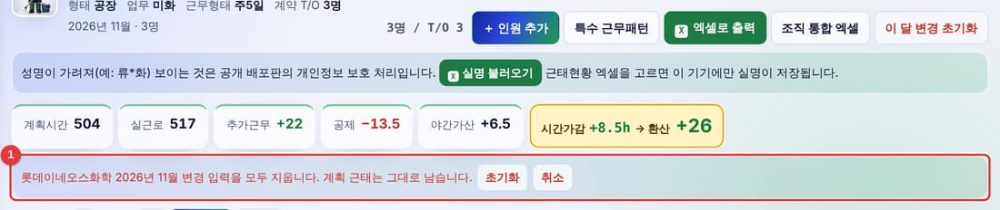 이 달 전체: 이 달 변경 초기화 |
⚠ 주의 「이 달 변경 초기화」는 그 사업장 그 달의 변경 입력을 모두 지웁니다(계획은 남음). 되돌릴 수 없으니 엑셀 출력·백업 후에 쓰세요. |
5. 결과 확인과 엑셀
5-1. 엑셀로 출력
1단계 사업장 근태 화면 → 「엑셀로 출력」.
2단계 PC는 다운로드 폴더에 저장, 휴대폰 앱은 「공유」로 카카오톡·메일·드라이브에 보냅니다.
- 시트: 근태현황(계획·변경·시간가감·요약, 근무 편성 인원) · 시간 산출 내역.
- 오른쪽 칸: 「가감 ○h → 환산 ○h」, 「이상근태 사용일수」 — 화면과 같습니다.
- 엑셀의 「시간가감 ○h → 환산 ○h」(위 요약 칸)와 사람별 「가감 → 환산」 칸은 글씨를 줄이고 칸 너비에 맞게 자동 축소되어 잘리지 않습니다(화면 글씨는 그대로).
- 추가근무 청구 내역을 작성한 사업장은 근태현황 시트 바로 다음에 「사업장명 1」 시트가 들어갑니다(5-3).
5-2. 조직 통합 엑셀
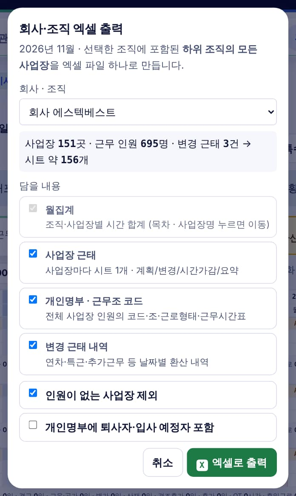
그림 35. 조직 통합 엑셀
- 회사·지사 단위로 여러 사업장을 한 파일로 냅니다: 월집계(목차) · 개인명부 · 근무조 코드 · 변경 근태 내역 · 사업장별 시트.
- 「담을 내용」의 추가근무 청구 내역을 켜 두면(기본) 작성한 사업장마다 사업장 시트 바로 다음에 「사업장명 1」 시트가 들어갑니다. 예) 롯데이네오스화학 → 롯데이네오스화학 1 → 롯데정밀화학 …
5-3. 추가근무 및 기타 청구 내역
고객사가 계약된 근무 외에 요청한 추가근무와 식대·장비 등 기타 청구의 금액표입니다. 사업장·월마다 작성하고, 엑셀로 내보내면 그 사업장 시트 바로 다음에 들어갑니다.
그림 36. 사업장 근태 상단 오른쪽 — 「추가근무 및 기타 청구 내역」 버튼(작성하면 청구 합계 표시)
1단계 사업장 근태 화면에서 「추가근무 및 기타 청구 내역」(처음엔 「작성하기」)을 누릅니다.
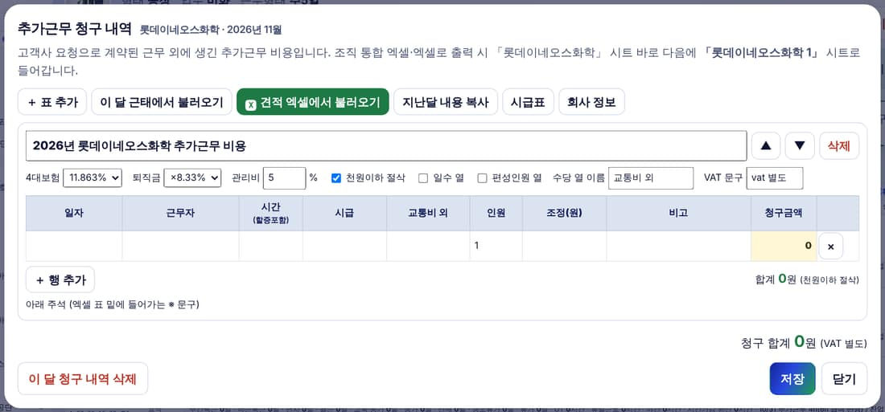
그림 37. 처음 열었을 때 — 빈 표 1개
2단계 아래 세 방법 중 편한 것으로 행을 채웁니다.
- 견적 엑셀에서 불러오기 — 지금 쓰는 견적서 엑셀(.xlsx)을 고르면 표·시급표·주석·회사 정보를 그대로 읽어 옵니다.
- 이 달 근태에서 불러오기 — 이 달 근태에서 추가근무가 있는 사람을 근무자별 행으로 넣습니다(시간 = 환산·할증 포함 시간).
- 직접 입력 — 일자·근무자·시간·시급·교통비·(일수)·인원·비고를 칸에 입력. 「＋ 행 추가」로 줄을 늘립니다.
3단계 금액은 자동 계산됩니다. 표마다 4대보험(11.863% / 11.893%), 퇴직금(×8.33% / ÷12 / 없음), 관리비 %, 천원이하 절삭, 일수 열·편성인원 열을 고릅니다.
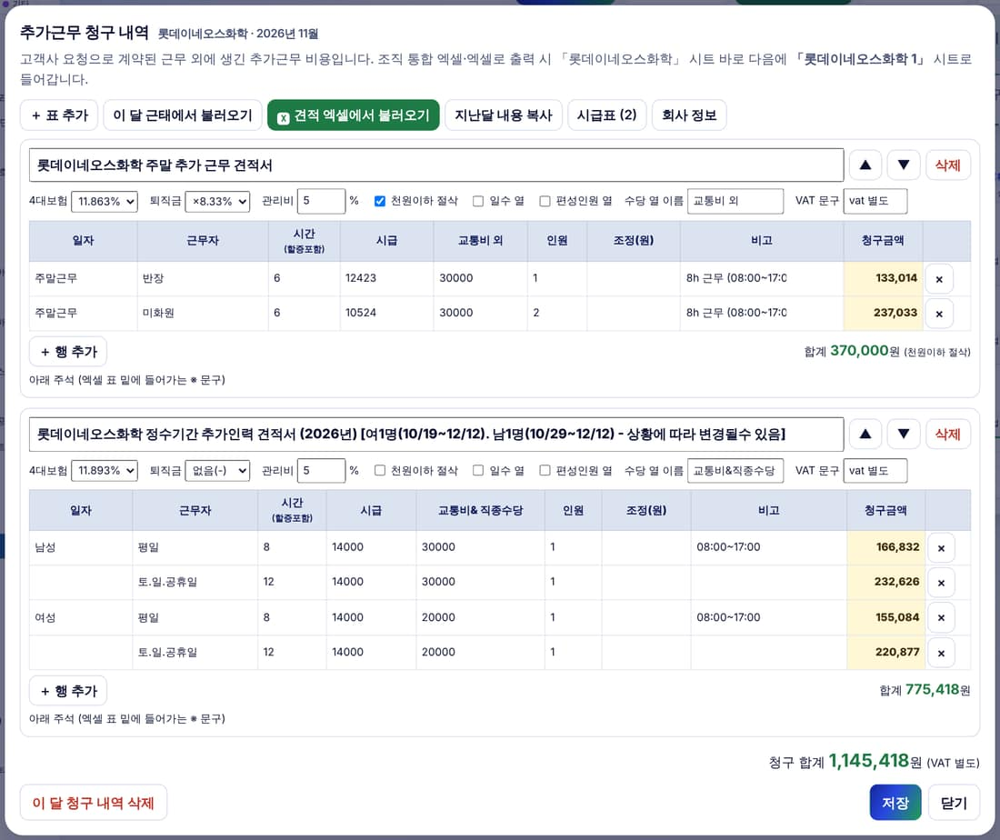
그림 38. 견적 엑셀을 불러온 모습 — 표 2개, 청구 합계 1,145,418원
4단계 저장. 버튼에 청구 합계가 표시되고, 엑셀로 출력·조직 통합 엑셀에 시트로 들어갑니다.
칸 | 계산 |
|---|---|
금액 | 시간(할증포함) × 시급 |
4대보험 | (금액 + 교통비) × 11.863% (또는 11.893%) |
퇴직금 | (금액 + 교통비 + 4대보험) × 8.33% 또는 ÷ 12 또는 「-」 |
소계 | 금액 + 교통비 + 4대보험 + 퇴직금 |
합계 | 소계 × (일수) × 인원 + 조정(원) |
청구금액 | 합계 + 합계 × 관리비 5% |
표 합계 | 청구금액 합 (천원이하 절삭을 켜면 1,000원 미만 버림) |
그림 39. 엑셀 「롯데이네오스화학 1」 시트 — 수식이 들어 있어 엑셀에서 숫자를 바꾸면 다시 계산됩니다
💡 알아두기 지난달 내용 복사 — 매달 비슷한 추가근무는 지난달 표를 복사한 뒤 날짜·시간만 고치세요. 시급표 — 엑셀 왼쪽(A·B열) 「2026 시급현황」. POST·파트에 직종명(반장·미화원 등)이 있으면 「이 달 근태에서 불러오기」 때 시급을 자동으로 넣습니다. 조정(원) — 합계에서 빼거나 더할 금액(예: 교통비 1일분 −20,000). 아래 주석 — 표 밑 ※ 문구를 고칠 수 있습니다. 보기만 권한인 사업장은 내용을 볼 수만 있습니다. |
5-3-1. 기타 청구 (식대 · 장비 · 기타)
근무가 아닌 청구 항목(식대, 장비 대여, 소모품, 교통비, 숙박비 등)은 청구 창 아래 초록색 「기타 청구」 표에 적습니다.
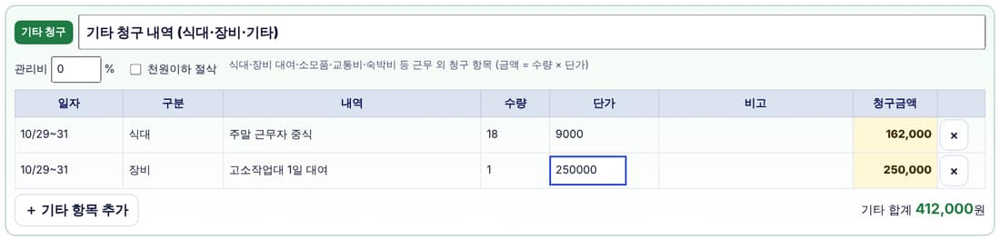
그림 40. 기타 청구 표 — 금액 = 수량 × 단가
1단계 「＋ 기타 항목 추가」 → 일자 · 구분 · 내역 · 수량 · 단가 · 비고를 입력합니다.
- 구분은 식대·장비·소모품·교통비·숙박비·피복·기타 중에서 고르거나 직접 씁니다.
- 관리비 %를 넣으면 청구금액 = 금액 + 관리비. 천원이하 절삭도 고를 수 있습니다.
2단계 창 아래에서 추가근무 + 기타 = 청구 합계를 확인하고 저장.
그림 41. 청구 합계와 「청구 내역만 엑셀」
청구 내역만 따로 엑셀로
- 청구 창 아래 「청구 내역만 엑셀」 — 이 사업장·이 달 청구 내역만 「사업장_YYYY년MM월_추가근무및기타청구내역.xlsx」로 저장합니다(저장 전 화면 내용 그대로).
- 엑셀에는 추가근무 표 → 기타 청구 표 → 총 청구금액(추가근무 + 기타) 순서로 들어갑니다.
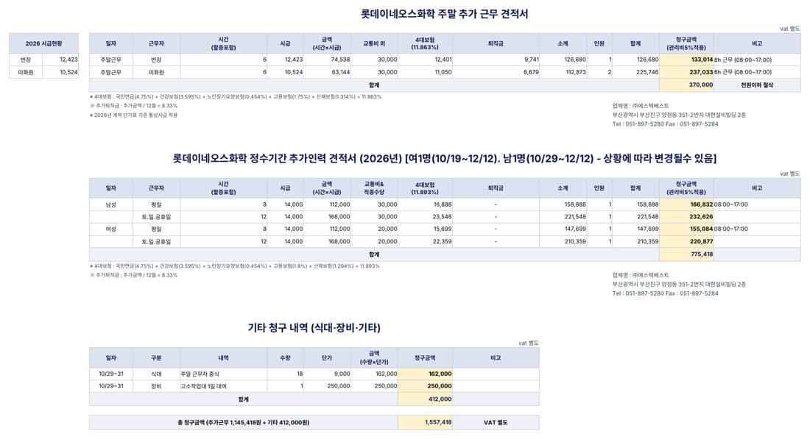
그림 42. 청구 내역만 엑셀 — 추가근무 표, 기타 청구 표, 총 청구금액
5-4. 개인별 · 월 집계
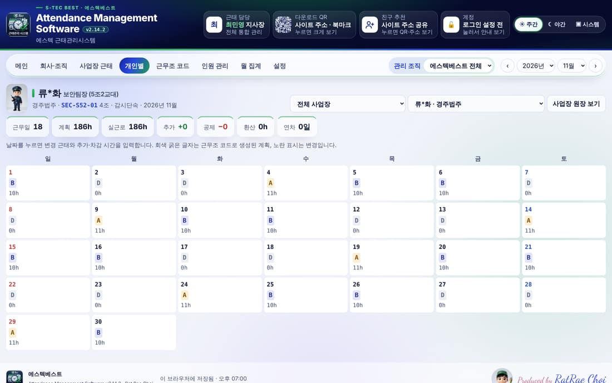
그림 43. 개인별 — 한 사람의 달력. 날짜를 눌러 변경 입력도 가능
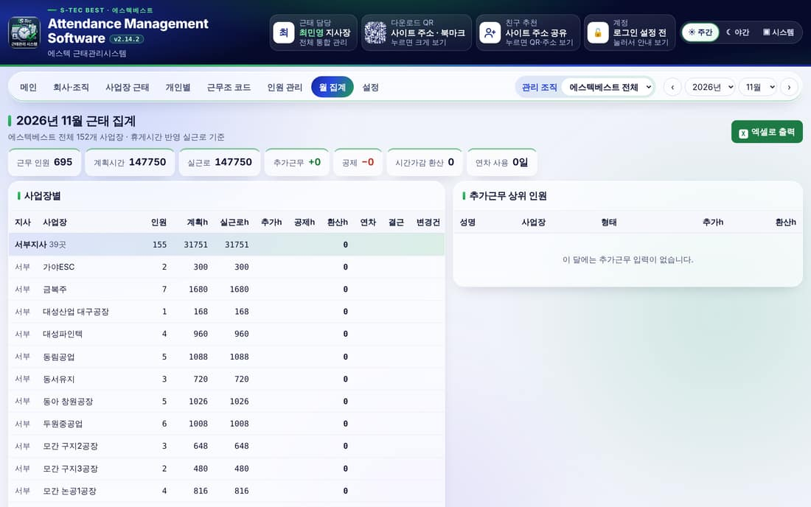
그림 44. 월 집계 — 사업장별 인원·시간·환산 합계
6. 급여
근로계약서 급여를 한 번 입력하면, 매달 변경 근태의 환산시간이 반영되어 급여가 계산되고 급여명세서까지 나옵니다.
6-1. 급여 화면
상단 메뉴 「급여」(월 집계 오른쪽). 사업장을 고르면 이 달 근무 인원의 급여가 표로 나옵니다.
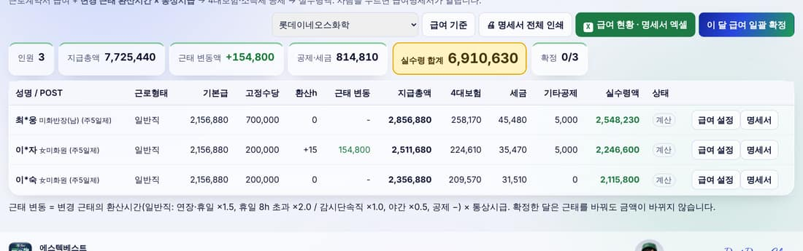
그림 45. 급여 화면 — 기본급 · 고정수당 · 환산h · 근태 변동 · 지급총액 · 4대보험 · 세금 · 실수령액
칸 | 뜻 |
|---|---|
고정수당 | 연장근무수당(월 고정) + 식대 + 기타 수당 |
환산h · 근태 변동 | 변경 근태의 환산시간과 그 금액(환산h × 통상시급). + 는 추가 지급, − 는 공제 |
4대보험 | 국민연금 + 건강보험 + 장기요양 + 고용보험 |
세금 | 소득세 + 지방소득세 |
상태 | 설정 필요 / 계산(아직 확정 전) / 확정 |
⚠ 주의 급여는 그 사업장에 ✏️ 수정 권한이 있는 사람만 볼 수 있습니다. |
6-2. 급여 설정 (근로계약서 입력)
1단계 사람 줄의 「급여 설정」(설정이 없으면 줄을 눌러도 열림).
2단계 근로계약서 금액을 입력합니다: 사번 · 직책/직급 · 시급 · 통상시급 · 기본급(월) · 연장근무수당(월 고정) · 식대.
그림 46. 급여 설정 — 아래에 이 달 미리보기
3단계 기타 수당(반장수당·자격수당·차량유지비 등)과 고정 공제(사우회비 등)를 「＋」로 추가. 비과세 수당은 「비과세」 체크.
4단계 부양가족·경로우대·장애인 수(소득세 계산용)를 넣고 저장.
💡 알아두기 통상시급은 근태 환산 금액 계산에 쓰입니다. 비우면 시급을 씁니다. 식대는 월 20만원까지 비과세로 자동 처리합니다. 국민연금·건강보험 고지 금액이 따로 있으면 「월액」 칸에 직접 넣으세요(비우면 자동 계산). 「변경 근태 환산시간을 급여에 반영」을 끄면 근태와 관계없이 고정 급여만 계산합니다. |
6-3. 근태가 급여에 반영되는 방식
근태 변동 = 변경 근태의 환산시간 × 통상시급. 근태 변경(4장)에서 입력한 내용이 그대로 급여에 들어갑니다.
변경 근태 | 일반직 | 감시단속직 |
|---|---|---|
연장 1시간 | +1.5h | +1.0h |
휴무일 특근 8시간 | +12h (8h × 1.5) | +8h |
휴일 8시간 초과 | × 2.0 | × 1.0 |
야간(22~06시) | +0.5 / 시간 | +0.5 / 시간 |
결근·조퇴 등 공제 | − 시간 | − 시간 |
예시 예) 일반직 미화원, 통상시급 10,320원 11/8(토) 휴무 → 특근 8h : +12h 11/9(일) 휴무 → 특근 8h + 연장 2h : 환산 합계 +15h 근태 변동 = 15h × 10,320원 = 154,800원 지급 |
6-4. 4대보험 · 소득세
항목 | 계산 (근로자 부담분) |
|---|---|
국민연금 | 과세급여 × 4.75% (기준소득 상·하한 적용) — 또는 직접 입력한 월액 |
건강보험 | 과세급여 × 3.595% — 또는 직접 입력한 월액 |
장기요양 | 건강보험료 × 0.9448 ÷ 7.19 |
고용보험 | 과세급여 × 0.9% |
소득세 | 근로소득 간이세액 산식(연간 환산: 근로소득공제·인적공제·연금보험료·건강·고용보험 공제 → 기본세율 → 근로소득세액공제) ÷ 12 |
지방소득세 | 소득세 × 10% |
💡 알아두기 과세급여 = 지급총액 − 비과세(식대 등). 10원 미만은 버립니다. 요율·지급일은 「급여 기준」에서 바꿉니다(공통 설정 — 「전체」 권한). 자녀세액공제는 반영하지 않습니다. 자녀가 있는 직원은 실제 원천징수와 차이가 날 수 있습니다. |
6-5. 급여명세서 · 이 달 추가 지급/공제 · 확정
그림 47. 급여명세서 — 근태 · 지급내역 · 공제내역 · 세금내역 · 세금산출내역
1단계 사람 줄의 「명세서」를 누르면 에스텍베스트 양식의 급여명세서가 열립니다(지급일자 = 다음 달 지급일).
2단계 상여·소급·가불처럼 이 달만 있는 금액은 「이 달만 추가 지급 · 공제」에서 넣고 「적용」.
3단계 금액을 확인하고 「이 달 급여 확정」. 확정한 달은 근태를 고쳐도 명세서가 바뀌지 않습니다(「확정 취소」로 되돌림).
그림 48. 확정 표시
4단계 🖨 인쇄(A4 한 장) 또는 명세서 엑셀로 출력합니다.
6-6. 급여 현황 엑셀 · 전체 인쇄 · 일괄 확정
- 급여 현황 · 명세서 엑셀 — 첫 시트 「급여 현황」(사람별 지급·공제·실수령 합계) + 사람마다 명세서 시트.
- 명세서 전체 인쇄 — 급여 설정이 된 사람의 명세서를 한 사람당 한 장씩 인쇄.
- 이 달 급여 일괄 확정 — 아직 확정하지 않은 사람을 한 번에 확정.
그림 49. 급여 현황 시트
💡 알아두기 휴대폰 앱에서는 인쇄가 안 될 수 있습니다. 그때는 엑셀로 출력해 PC에서 인쇄하세요. |
7. 휴대폰에서 쓰기
7-1. 휴대폰·폴더블 화면
근태표 — 옆으로 밀어 날짜 이동 | 날짜를 누르면 아래에서 입력 창 |
- 사업장 목록 대신 위쪽 사업장 선택 칸에서 고릅니다.
- 근태표는 화면 전체 너비로 보이고, 날짜는 옆으로 밀어 봅니다. 오른쪽 끝까지 밀면 이상근태 사용일수가 나옵니다.
- 갤럭시 폴더블은 펼친 화면에서 1일~20일 정도가 한 번에 보입니다.
8. 자주 묻는 질문
8-1. 막힐 때
Q. 엑셀 자료 반영하기에서 「근무조 코드가 없습니다」라고 나와요.
A. 양식 「근무조 코드」 시트의 코드를 목록에서 골라 그대로 적으세요. 새 근무조가 필요하면 제작자에게 코드 추가를 요청한 뒤 「지금 자료 채운 양식」을 다시 받으세요.
Q. 엑셀로 반영했는데 잘못 들어갔어요.
A. 엑셀 자료 반영하기 창을 다시 열어 「직전 반영 되돌리기」를 누르세요(마지막 1회분).
Q. 다운로드 QR·친구 추천으로 열리지 않아요.
A. v2.14.2로 업데이트하면 새 주소로 자동으로 바뀝니다. 예전 QR 이미지를 쓰고 있다면 다운로드 QR 화면에서 새 QR을 다시 공유하세요.
Q. 급여의 근태 변동이 0이에요.
A. 그 달 변경 근태가 없거나, 급여 설정에서 「변경 근태 환산시간을 급여에 반영」이 꺼져 있거나, 통상시급·시급이 비어 있는지 확인하세요. 이미 확정한 달이면 확정 취소 후 다시 계산됩니다.
Q. 급여 메뉴에 「수정 권한이 있는 사용자만」이라고 나와요.
A. 그 사업장이 보기만 권한입니다. 제작자에게 ✏️ 수정 권한을 요청하세요.
Q. 엑셀에서 「가감 → 환산」 글씨가 칸 밖으로 나가요.
A. v2.18.0부터 그 칸은 작은 글씨 + 칸에 맞춰 자동 축소로 나옵니다. 앱을 새 버전으로 바꾸고 다시 출력하세요.
Q. 추가근무 청구 내역 시트가 통합 엑셀에 없어요.
A. 그 사업장·그 달에 청구 내역을 저장했는지, 조직 통합 엑셀의 「추가근무 청구 내역」 체크가 켜져 있는지 확인하세요. 인원이 없는 사업장 제외를 켜면 인원 0명 사업장은 빠집니다.
Q. 근태 자료가 갑자기 사라졌거나 다른 자료로 바뀌었어요.
A. 내 계정 → 「백업에서 근태 되살리기」에서 날짜·인원 수가 맞는 백업을 고르세요(1-6). 그래도 없으면 다른 기기를 열지 말고 제작자에게 알리세요.
Q. 근태 칸을 눌러도 입력 창이 안 열려요.
A. 「👁 보기 전용」 권한이거나, 조직별 권한에서 그 지사·사업장이 「보기만」입니다. 내 계정 → 관리 범위에서 확인하고, 고쳐야 하면 제작자에게 「수정」 권한을 요청하세요.
Q. 다른 사람이 고친 근태가 안 보여요.
A. 약 20초 안에 반영됩니다. 바로 보려면 내 계정 → 「지금 동기화」. 입력 창이 열려 있는 동안에는 닫은 뒤 반영됩니다.
Q. 이름이 류*화처럼 가려져 보여요.
A. 공개 배포판의 개인정보 보호입니다. 「실명 불러오기」로 근태현황 엑셀을 고르면 그 기기에만 실명이 저장됩니다.
Q. 다음 달 근태가 비어 있어요.
A. 근무조 코드로 자동 생성됩니다. 입사(배치)일·감원일과 근무조 코드가 맞는지 성명 칸에서 확인하세요.
Q. 근무조를 바꿨는데 지난달도 바뀌었나요?
A. 아니요. 보고 있는 달부터 적용되고 이전 달은 그대로입니다.
Q. 반차 날 −4.5h를 넣었는데 가감이 0h예요.
A. 유급 인정 근태는 「추가·차감」으로 더 줄지 않습니다. 「시간가감 직접 입력」에 −4.5를 넣으세요.
Q. 보안인데 일반직으로 계산해야 하는 사람이 있어요.
A. 성명 칸 → 근로형태 「일반직」 → 적용 범위 「이 인원만」 → 저장.
Q. PC에서 입력한 게 휴대폰에 없어요.
A. 로그인을 쓰면 같은 계정으로 로그인 후 「지금 동기화」(공유 근태는 자동 반영). 로그인을 안 쓰면 설정 › 데이터 백업으로 옮기세요.
Q. 엑셀이 휴대폰에서 안 열려요.
A. 앱에서는 「공유」 창이 뜹니다. 카카오톡 나에게 보내기나 드라이브에 저장한 뒤 엑셀 앱으로 여세요.
8-2. 꼭 지킬 것
- 월 마감 전에 엑셀로 출력해 보관하세요.
- 「이 달 변경 초기화」·「감원」은 신중히.
- 기기를 바꾸거나 브라우저 기록을 지우기 전에 설정 › 데이터 백업.
- 한 기기를 여러 계정이 번갈아 쓰지 않기.